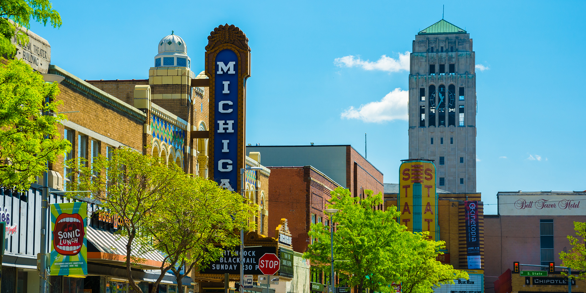
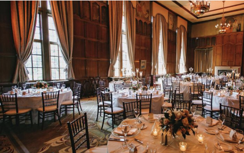
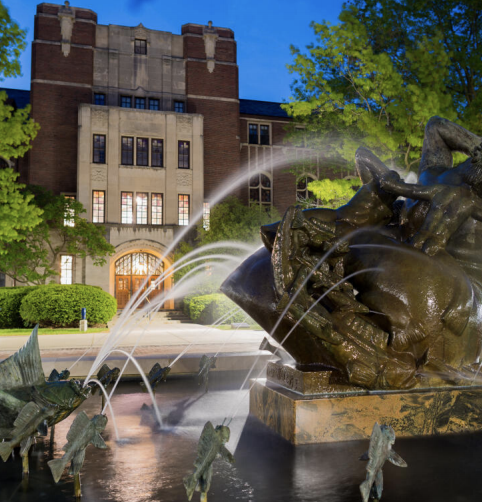

Our Theme
Our theme “Branch and Bound” stems from the titular computer science algorithm, which solves problems using branches of a “tree” that represent all candidate solutions. To arrive at the best outcome, the algoristhm constantly pivots through the bounds of each branch and investigates all possible courses of action.
We endeavor to take this algorithm and translate its essence into our conference through programming, community, and application. As we explore our options and branch out, we also arrive at the bounds of our skills, resources, and interests. But as long as we are bound to our community, which encourages and uplifts us as we learn and grow, we can adapt, redirect, and actualize our passions and dreams.
We are confident this analogy will leave attendees with a better grasp of the possibilities available to them and the resources they have to achieve their goals successfully. “Branch & Bound” is meant to last a lifetime — our hope is that beyond this three-day conference, attendees will be imbued with a greater sense of purpose, identity, and community that lasts in the years to come.
Our Vision
How do we interact with, discuss, and embrace our Taiwanese identity after we graduate college? When we enter the professional world, where do we go to find community? How can we hold conversations that encompass our relationship to Taiwanese heritage and the cultural nuance of being Taiwanese American in the Midwest?
We seek to mitigate the lack of representation, connections, or exposure that often deter Taiwanese Americans from certain career choices by inviting speakers ranging from new graduates to community action advocates to industry professionals who can address the role of Taiwanese American identity in their careers and interests. Their stories will serve as a launching pad for our attendees to evaluate their individual branches and bounds, and attendees will have the chance to listen, share, and reflect with the support of their peers in intimate, small group discussions.
In combining programming with a sense of greater community at the 2021 Midwest Conference, we aim to facilitate an environment that encourages and inspires each attendee to explore their options and pursue new opportunities, and ultimately equips them with the resources and support necessary to lead, interact, and give back to their communities, even after the conference has ended.
Location

The city & campus
The University of Michigan was established in the city of Ann Arbor in 1837, and since then hundreds of thousands of students and faculty have been proud to call Ann Arbor home. The city is ranked one of the best small college towns to live in, one of the most educated cities, and one of the happiest inthe nation. Offering a wide and diverse array of restaurants, shops, and entertainment, Ann Arbor is the perfect place to explore, learn, and experience a variety of cultures. In addition to its positive ratings and diverse population, Ann Arbor is a green city that prides itself in its natural beauty and environmentally sound transportation. With an abundance of things to do, proximity to campus, and unique community, Ann Arbor is certainly captivating and a city worth visiting.
Venues

Rogel Ballroom
The opening ceremony and keynote speaker event
on Friday will take place in the Rogel Ballroom at
the Michigan Union. As one of the largest event
and conference venues at the university, the
Rogel Ballroom holds up to 600 people and is
well-equipped with a sound system, projector,
projector screen, adjustable lighting, and more

Michigan League
Workshops will be held in several rooms in the
Michigan League, the beautiful and spacious
student union located on the north end of Central
Campus. The rooms range in size and capacity,
with some accommodating up to 100 people.
Having all workshops held in one building ensures
close proximity and easy navigation for workshop
leaders and attendees; the Saturday morning
keynote session will also be held in one of these
rooms. The Concourse area in the League will
serve as home base for the conference, with
registration and additional programming taking
place here.